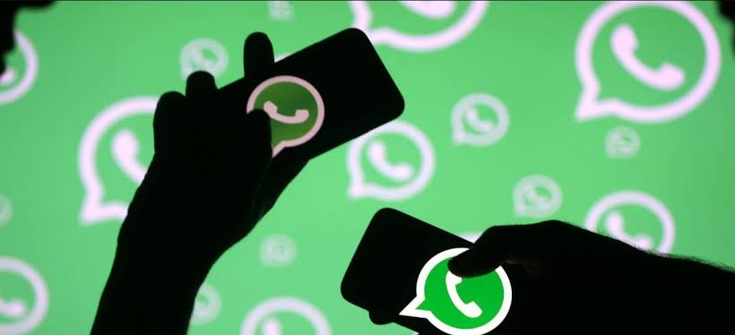

Clonagem de WhatsApp
A Clonagem de WhatsApp é um golpe cada vez mais comum, onde criminosos tomam controle do aplicativo da vítima para aplicar fraudes e extorquir dinheiro de seus contatos. Entender como funciona esse golpe é essencial para evitar prejuízos e manter sua conta segura.
Como Acontece a Clonagem de WhatsApp?
A Clonagem de WhatsApp ocorre quando criminosos conseguem acessar sua conta em outro dispositivo. Isso permite que eles leiam suas mensagens, façam novos contatos e solicitem dinheiro se passando por você.
Exemplo: Um golpista entra em contato fingindo ser um atendente do WhatsApp e convence a vítima a fornecer um código de verificação, permitindo que ele acesse a conta dela.
Pergunta 1:
Como criminosos geralmente conseguem clonar o WhatsApp?
- Hackeando o chip remotamente
- Obtendo o código de verificação da vítimas
- Através de e-mails falsos
Principais Formas de Clonagem
-
Golpe do Código de Verificação
O criminoso finge ser um conhecido ou funcionário de uma empresa e pede que você envie um código recebido por SMS.
- Nunca compartilhe códigos de verificação do WhatsApp com ninguém.
- O WhatsApp nunca pede esse código por telefone ou mensagem.
-
WhatsApp Web Não Autorizado
Se alguém tiver acesso ao seu celular por alguns segundos, pode conectar sua conta ao WhatsApp Web e monitorar suas mensagens.
- Verifique regularmente os dispositivos conectados em Configurações > Dispositivos Conectados.
- Se notar algo suspeito, saia de todas as sessões imediatamente.
-
Aplicativos Espiões
Criminosos podem instalar apps espiões no seu celular para roubar suas mensagens e dados.
- Evite baixar aplicativos de fontes desconhecidas.
- Revise as permissões dos apps no seu celular.
-
Engenharia Social e Falsos Suportes
Os golpistas se passam por suporte técnico do WhatsApp ou empresas conhecidas e pedem dados pessoais para “resolver um problema”.
- Nenhum suporte legítimo entrará em contato pedindo seu código de verificação.
- Sempre confirme informações diretamente no site oficial da empresa.
Pergunta 2:
Qual é a atitude mais importante para evitar o golpe do código de verificação?
- Compartilhar o código apenas com familiares
- Ignorar mensagens do WhatsApp
- Nunca compartilhar o código com ninguém
Como Saber se Seu WhatsApp Foi Clonado?
- Você é desconectado do WhatsApp sem motivo.
- Amigos recebem mensagens estranhas.
- Você vê mensagens que não reconhece.
Pergunta 3:
Qual é um dos sinais de que seu WhatsApp foi clonado?
- Mensagens enviadas que você não escreveu
- O app fecha sozinho
- O celular esquenta
O Que Fazer se Seu WhatsApp For Clonado?
- Reinstalar o WhatsApp e inserir o número
- Ativar verificação em duas etapas
- Avisar os contatos
- Denunciar ao WhatsApp
Como se Proteger da Clonagem de WhatsApp?
video
Pergunta 4:
O que você deve fazer imediatamente se seu WhatsApp for clonado?
- Esperar o invasor sair
- Reinstalar o app e verificar com seu número
- Apagar o app
Conclusão
Evite golpes ativando a verificação em duas etapas e não compartilhando códigos com ninguém.